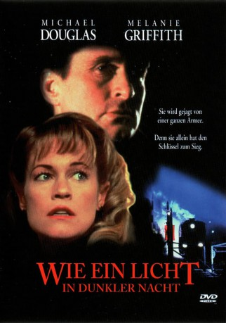
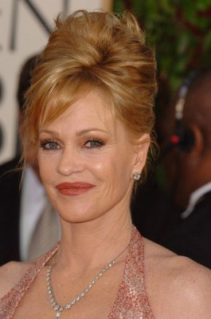
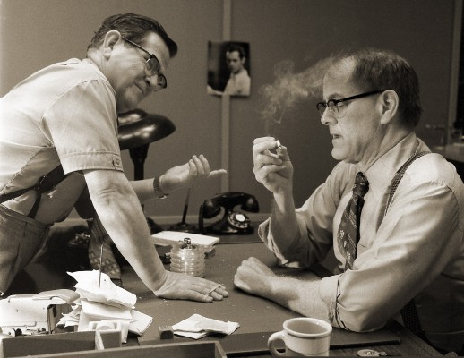

#9324 Wie ein Licht in dunkler Nacht
Alternativ: Shining Through
 
 IMDB-Wertung: 6.4 / 10
IMDB-Wertung: 6.4 / 10  Metascore: 0
Metascore: 0 
Sie ist jung, sie ist intelligent - und sie spricht die Sprache des Feindes. Für die junge Sekretärin ist der neue Job bei einer unbekannten New Yorker Firma der Einstieg in die ganz große Herausforderung; schon bald erkennt sie nämlich, das hinter der harmlosen Fassade das Herz des amerikanischen Geheimdienstes steckt. Als der einzige Kontakt in die militärischen Forschungslabors des Gegners abbricht, ist für Linda die große Chance gekommen: Als Undercover-Agentin begibt sie sich freiwillig in die Höhle des Löwen. Denn neben ihrem offiziellen Auftrag hat sie auch eine ganz private Mission zu erfüllen...
Jahr: 1992
Dauer: 132 Minuten
FSK: 16
Land: USA Studio: Twentieth Century FoxTonspuren:
Untertitel: Deutsch, Englisch,
Auflösung: 1080p (1920x808) Größe: 8140 MB
Genre: Thriller, Drama, Krieg, Liebe
Regisseur: David Seltzer
Drehbuch: Susan Isaacs
Soundtrack: Michael Kamen
Darsteller:
 Michael Douglas als Ed Leland
Michael Douglas als Ed Leland-  Melanie Griffith als Linda Voss
 Liam Neeson als Franze-Otto Dietrich
Liam Neeson als Franze-Otto Dietrich Joely Richardson als Margrete Von Eberstien
Joely Richardson als Margrete Von Eberstien John Gielgud als Sunflower
John Gielgud als Sunflower-  Francis Guinan als Andrew Berringer
 Sylvia Syms als Linda's Mother
Sylvia Syms als Linda's Mother Hansi Jochmann als Hedda Drescher
Hansi Jochmann als Hedda Drescher- Dana Gladstone als Street Agitator
 Mathieu Carrière als Von Haefler
Mathieu Carrière als Von Haefler Wolf Kahler als Border Commandant
Wolf Kahler als Border Commandant William Hope als Kernohan
William Hope als Kernohan- Rob Freeman als 2nd G.I. in Canteen
- Lisa Orgolini als Girl in Canteen
 Jay Benedict als Wisecracker in War Room
Jay Benedict als Wisecracker in War Room Thomas Kretschmann als Man at Zurich Station
Thomas Kretschmann als Man at Zurich Station Klaus Münster als Cab Driver
Klaus Münster als Cab Driver Clement von Franckenstein als BBC Interviewer
Clement von Franckenstein als BBC Interviewer- Lorelei King als Leland's New Secretary
 Michael Gempart als Man at Kinderstrasse
Michael Gempart als Man at Kinderstrasse- Hana Maria Pravda als Babysitter
 Roy Alon als Cook (uncredited)
Roy Alon als Cook (uncredited) Juliet Aubrey als Brunette at dance (uncredited)
Juliet Aubrey als Brunette at dance (uncredited) Lucien Morgan als Jock (uncredited)
Lucien Morgan als Jock (uncredited)- Mary Ann Schmidt als Women's Air Force 'WAF' Dancer (uncredited)
 D.J. Sharp als Vocal Effects (uncredited)
D.J. Sharp als Vocal Effects (uncredited)- Patrick Winczewski als Fishmonger
- Anthony Walters als Dietrich's Son
- Victoria Shalet als Dietrich's Daughter
- Sheila Allen als Olga Leiner, Margrete's Mother
- Stanley Beard als Linda's Father
- Ronald Nitschke als Horst Drescher
- Peter Flechtner als S.S. Officer at Fish Market
- Alexander Hauff als S.S. Officer at Fish Market
- Claus Plankers als S.S. Officer at Fish Market
- Renate Cyll als Woman in Fish Market
- Lorinne Vozoff als Personnel Director
- Deirdre Harrison als USO Singer
- Wolfe Morris als Male Translator
 Nigel Whitmey als 1st G.I. in Canteen
Nigel Whitmey als 1st G.I. in Canteen- Markus Napier als S.S. Officer
- Constanze Engelbrecht als Stayson Von Neest
- Martin Hoppe als German Soldier
- Fritz Eggert als German Soldier
- Ludwig Haas als Hitler
- Hans Martin Stier als Truck Driver
- Wolfgang Heger als Bus Conductor, Kinderstrasse
- Lutz Weillich als Train Station Guard
- Wolfgang Müller als Bus Conductor
- Markus Kissling als Swiss Border Guard
Datei: X:\1992\Wie ein Licht in dunkler Nacht (1992, FSK16, 1920x808).mkv seit 27.07.2018
Festplatte: HD 1992-1995
 Es gibt insgesamt 57 Filme in der Gruppe '1992'
Es gibt insgesamt 57 Filme in der Gruppe '1992'